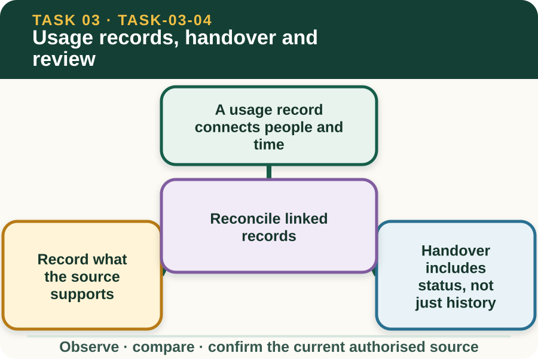

Classroom presentation · 8 slides
Usage records, handover and review
Task 3 · 1 of 8
Usage records, handover and review
Record authorised use, defects and task outcomes so the next person receives reliable information.

Speaker notes
Teaching move (web-deck purpose): Use the module visual and the fictional worked example to move students from observation to a source-led decision. Ask students to name the evidence, the authority gap and the next safe communication step. Misconception and help: A missing source value must remain visibly unconfirmed. Unknown recorded honestly is better than a number guessed confidently. Applied action: Audit a fictional machine handover. Compare a fictional usage entry, defect note and handover message. Identify missing or conflicting information and draft a corrected handover. Do not enter real machine, farm or worker details. Boundary: This supplementary learning draws on mapped AHCMOM202 concepts. Current signed TAS and RTO documents control cohort delivery, assessment and competency decisions; current workplace procedures, supervision and authorised sources control real work. [Sources] - Source basis: AHCMOM202 Release 1 requirements for reporting faults, damage and irregular performance and maintaining tractor and equipment use records. Current workplace and RTO systems control operating logs, maintenance and assessment evidence. - Visual visual-task-03-04: Generated locally from accepted Stage 05 module headings; no external image copied. - Course visual manifest: work/pi/visuals/visual-manifest.json
Task 3 · 2 of 8
Map the learning
- A usage record connects people and time
- Record what the source supports
- Handover includes status, not just history
Retrieve: A required usage value was not captured. What is the most reliable response?
Speaker notes
Teaching move (learning map): Use the module visual and the fictional worked example to move students from observation to a source-led decision. Ask students to name the evidence, the authority gap and the next safe communication step. Misconception and help: A missing source value must remain visibly unconfirmed. Unknown recorded honestly is better than a number guessed confidently. Applied action: Audit a fictional machine handover. Compare a fictional usage entry, defect note and handover message. Identify missing or conflicting information and draft a corrected handover. Do not enter real machine, farm or worker details. Boundary: This supplementary learning draws on mapped AHCMOM202 concepts. Current signed TAS and RTO documents control cohort delivery, assessment and competency decisions; current workplace procedures, supervision and authorised sources control real work. [Sources] - Source basis: AHCMOM202 Release 1 requirements for reporting faults, damage and irregular performance and maintaining tractor and equipment use records. Current workplace and RTO systems control operating logs, maintenance and assessment evidence. - Visual visual-task-03-04: Generated locally from accepted Stage 05 module headings; no external image copied. - Course visual manifest: work/pi/visuals/visual-manifest.json
Task 3 · 3 of 8
Notice the evidence
A usage record connects people and time
A machine may pass between operators, tasks, locations and maintenance roles. A usage record creates traceability by showing the machine identity, authorised task context, time or usage data, findings and status.
The current workplace form defines exact fields and who completes them. A fictional website record only rehearses the thinking and must not be treated as an operating log or RTO submission.
Record what the source supports
Values should come from the authorised machine display, job record or direct observation as the workplace procedure allows. Do not estimate a reading that was not captured or copy a previous entry to fill a gap.
If a value cannot be confirmed, mark it through the current process and report the missing information. An honest unknown is safer than a plausible but invented number.
Speaker notes
Teaching move (theory idea 1): Use the module visual and the fictional worked example to move students from observation to a source-led decision. Ask students to name the evidence, the authority gap and the next safe communication step. Misconception and help: A missing source value must remain visibly unconfirmed. Unknown recorded honestly is better than a number guessed confidently. Applied action: Audit a fictional machine handover. Compare a fictional usage entry, defect note and handover message. Identify missing or conflicting information and draft a corrected handover. Do not enter real machine, farm or worker details. Boundary: This supplementary learning draws on mapped AHCMOM202 concepts. Current signed TAS and RTO documents control cohort delivery, assessment and competency decisions; current workplace procedures, supervision and authorised sources control real work. [Sources] - Source basis: AHCMOM202 Release 1 requirements for reporting faults, damage and irregular performance and maintaining tractor and equipment use records. Current workplace and RTO systems control operating logs, maintenance and assessment evidence. - Visual visual-task-03-04: Generated locally from accepted Stage 05 module headings; no external image copied. - Course visual manifest: work/pi/visuals/visual-manifest.json
Task 3 · 4 of 8
Use the source boundary
Handover includes status, not just history
The next authorised person needs to know what task was completed, where the machine is, whether an abnormality was observed and what restriction or follow-up applies. A long story can still be a poor handover if the current status is unclear.
Use direct language and the workplace's standard terms. Confirm that the receiver understands any hold, referral or outstanding check rather than assuming that entering a note is enough.
Reconcile linked records
Usage, defect, maintenance and work records may contain related facts. Machine identity, date, task and status should agree carefully across the authorised records that apply.
A mismatch is not fixed by choosing the newest-looking entry. Compare the source details and refer any unresolved conflict so the authorised person can correct the controlling record.
Speaker notes
Teaching move (theory idea 2): Use the module visual and the fictional worked example to move students from observation to a source-led decision. Ask students to name the evidence, the authority gap and the next safe communication step. Misconception and help: A missing source value must remain visibly unconfirmed. Unknown recorded honestly is better than a number guessed confidently. Applied action: Audit a fictional machine handover. Compare a fictional usage entry, defect note and handover message. Identify missing or conflicting information and draft a corrected handover. Do not enter real machine, farm or worker details. Boundary: This supplementary learning draws on mapped AHCMOM202 concepts. Current signed TAS and RTO documents control cohort delivery, assessment and competency decisions; current workplace procedures, supervision and authorised sources control real work. [Sources] - Source basis: AHCMOM202 Release 1 requirements for reporting faults, damage and irregular performance and maintaining tractor and equipment use records. Current workplace and RTO systems control operating logs, maintenance and assessment evidence. - Visual visual-task-03-04: Generated locally from accepted Stage 05 module headings; no external image copied. - Course visual manifest: work/pi/visuals/visual-manifest.json
Task 3 · 5 of 8
Connect evidence to action
Review task outcome without diagnosing operation
A post-task review can compare the authorised plan with the recorded outcome, delays, environmental observations and reported abnormalities. It helps planning roles identify what information or coordination should improve next time.
Learners should not diagnose machine performance or prescribe servicing from a website scenario. Unexpected performance, damage or faults are described factually and referred to the authorised maintenance process.
Protect access and privacy
Machine records may identify workers, properties, locations and operational patterns. Use only the authorised system, include necessary information and follow all workplace access rules securely and consistently.
This site's exercises use fictional machines and people. Do not paste a real usage log, property map, worker name, signature or assessor observation into a device-local field.
Speaker notes
Teaching move (theory idea 3): Use the module visual and the fictional worked example to move students from observation to a source-led decision. Ask students to name the evidence, the authority gap and the next safe communication step. Misconception and help: A missing source value must remain visibly unconfirmed. Unknown recorded honestly is better than a number guessed confidently. Applied action: Audit a fictional machine handover. Compare a fictional usage entry, defect note and handover message. Identify missing or conflicting information and draft a corrected handover. Do not enter real machine, farm or worker details. Boundary: This supplementary learning draws on mapped AHCMOM202 concepts. Current signed TAS and RTO documents control cohort delivery, assessment and competency decisions; current workplace procedures, supervision and authorised sources control real work. [Sources] - Source basis: AHCMOM202 Release 1 requirements for reporting faults, damage and irregular performance and maintaining tractor and equipment use records. Current workplace and RTO systems control operating logs, maintenance and assessment evidence. - Visual visual-task-03-04: Generated locally from accepted Stage 05 module headings; no external image copied. - Course visual manifest: work/pi/visuals/visual-manifest.json
Task 3 · 6 of 8
Retrieve and check
A required usage value was not captured. What is the most reliable response?
- Copy the previous value because the machine was used only briefly.
- Estimate a realistic value and mark it as exact.
- Record the value as unconfirmed through the current process and report the gap.
Teacher reveal
Correct. The missing fact stays visible for authorised follow-up.
Unknown recorded honestly is better than a number guessed confidently.
Speaker notes
Teaching move (retrieval): Use the module visual and the fictional worked example to move students from observation to a source-led decision. Ask students to name the evidence, the authority gap and the next safe communication step. Misconception and help: A missing source value must remain visibly unconfirmed. Unknown recorded honestly is better than a number guessed confidently. Applied action: Audit a fictional machine handover. Compare a fictional usage entry, defect note and handover message. Identify missing or conflicting information and draft a corrected handover. Do not enter real machine, farm or worker details. Boundary: This supplementary learning draws on mapped AHCMOM202 concepts. Current signed TAS and RTO documents control cohort delivery, assessment and competency decisions; current workplace procedures, supervision and authorised sources control real work. [Sources] - Source basis: AHCMOM202 Release 1 requirements for reporting faults, damage and irregular performance and maintaining tractor and equipment use records. Current workplace and RTO systems control operating logs, maintenance and assessment evidence. - Visual visual-task-03-04: Generated locally from accepted Stage 05 module headings; no external image copied. - Course visual manifest: work/pi/visuals/visual-manifest.json Use option-specific feedback after the learner commits to an answer.
Task 3 · 7 of 8
Construct a source-led response
Reconcile two fictional tractor records with conflicting status, then write a short handover that protects the next authorised user.
- Both records refer to…
- Record one states…
- Record two states…
- The conflict means…
- I would refer both to…
- The handover should state the confirmed status and…
Success criteria
- Uses exact fictional machine identity
- Makes the status conflict visible
- Includes current status and outstanding action
- Avoids operation, diagnosis, repair and competency claims
Speaker notes
Teaching move (guided written response): Use the module visual and the fictional worked example to move students from observation to a source-led decision. Ask students to name the evidence, the authority gap and the next safe communication step. Misconception and help: A missing source value must remain visibly unconfirmed. Unknown recorded honestly is better than a number guessed confidently. Applied action: Audit a fictional machine handover. Compare a fictional usage entry, defect note and handover message. Identify missing or conflicting information and draft a corrected handover. Do not enter real machine, farm or worker details. Boundary: This supplementary learning draws on mapped AHCMOM202 concepts. Current signed TAS and RTO documents control cohort delivery, assessment and competency decisions; current workplace procedures, supervision and authorised sources control real work. [Sources] - Source basis: AHCMOM202 Release 1 requirements for reporting faults, damage and irregular performance and maintaining tractor and equipment use records. Current workplace and RTO systems control operating logs, maintenance and assessment evidence. - Visual visual-task-03-04: Generated locally from accepted Stage 05 module headings; no external image copied. - Course visual manifest: work/pi/visuals/visual-manifest.json
Task 3 · 8 of 8
Close the loop
Audit a fictional machine handover
Compare a fictional usage entry, defect note and handover message. Identify missing or conflicting information and draft a corrected handover. Do not enter real machine, farm or worker details.
- Name the strongest evidence in the scenario.
- Explain the decision or referral it supports.
- State which current source or authorised person controls real work.
Boundary: This supplementary learning draws on mapped AHCMOM202 concepts. Current signed TAS and RTO documents control cohort delivery, assessment and competency decisions; current workplace procedures, supervision and authorised sources control real work.
Speaker notes
Teaching move (exit and application): Use the module visual and the fictional worked example to move students from observation to a source-led decision. Ask students to name the evidence, the authority gap and the next safe communication step. Misconception and help: A missing source value must remain visibly unconfirmed. Unknown recorded honestly is better than a number guessed confidently. Applied action: Audit a fictional machine handover. Compare a fictional usage entry, defect note and handover message. Identify missing or conflicting information and draft a corrected handover. Do not enter real machine, farm or worker details. Boundary: This supplementary learning draws on mapped AHCMOM202 concepts. Current signed TAS and RTO documents control cohort delivery, assessment and competency decisions; current workplace procedures, supervision and authorised sources control real work. [Sources] - Source basis: AHCMOM202 Release 1 requirements for reporting faults, damage and irregular performance and maintaining tractor and equipment use records. Current workplace and RTO systems control operating logs, maintenance and assessment evidence. - Visual visual-task-03-04: Generated locally from accepted Stage 05 module headings; no external image copied. - Course visual manifest: work/pi/visuals/visual-manifest.json